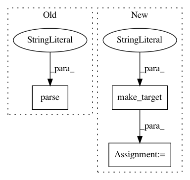

183b0b0853fc79810e76f5144686bb6fdb317dda,tests/python/pants_test/base/test_target.py,TargetTest,test_empty_traversable_properties,#TargetTest#,69
Before Change
)
"""))
self.build_graph.inject_address_closure(BuildFileAddress(build_file, "foo"))
target = self.build_graph.get_target(SyntheticAddress.parse("//:foo"))
self.assertSequenceEqual([], list(target.traversable_specs))
self.assertSequenceEqual([], list(target.traversable_dependency_specs))
After Change
self.assertEquals(list(concrete.derived_from_chain), [])
def test_empty_traversable_properties(self):
target = self.make_target(":foo", Target)
self.assertSequenceEqual([], list(target.traversable_specs))
self.assertSequenceEqual([], list(target.traversable_dependency_specs))
def test_deferred_sources_payload_field(self):
In pattern: SUPERPATTERN
Frequency: 3
Non-data size: 3
Instances
Project Name: pantsbuild/pants
Commit Name: 183b0b0853fc79810e76f5144686bb6fdb317dda
Time: 2015-08-30
Author: john.sirois@gmail.com
File Name: tests/python/pants_test/base/test_target.py
Class Name: TargetTest
Method Name: test_empty_traversable_properties
Project Name: pantsbuild/pants
Commit Name: ad9f8480c8e08b95d6c217ec4a126bd93b7f376a
Time: 2015-08-31
Author: john.sirois@gmail.com
File Name: tests/python/pants_test/base/test_target.py
Class Name: TargetTest
Method Name: test_deferred_sources_payload_field
Project Name: pantsbuild/pants
Commit Name: ad9f8480c8e08b95d6c217ec4a126bd93b7f376a
Time: 2015-08-31
Author: john.sirois@gmail.com
File Name: tests/python/pants_test/backend/jvm/targets/test_jvm_target.py
Class Name: JvmTargetTest
Method Name: test_traversable_dependency_specs